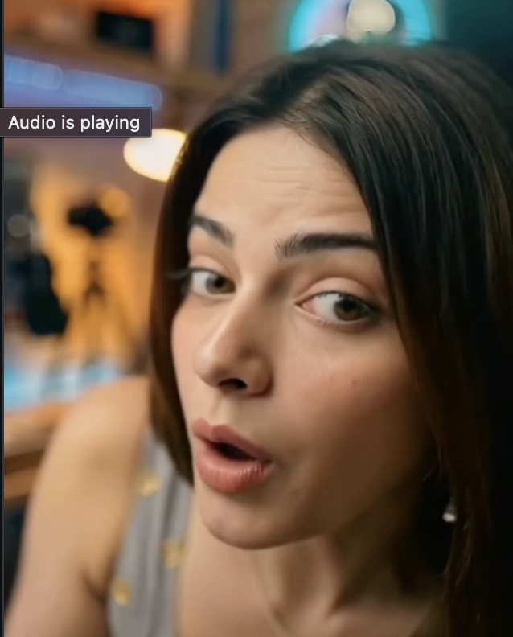

End‑to‑end image‑to‑video generation with Wan2.1 I2V 14B
This repository hosts sample outputs from a project I developed: a motion-control pipeline that generates 1080p, 10–30 second videos from a single character image and text prompts using the Wan2.1 I2V 14B diffusion model. The goal is to demonstrate end‑to‑end image‑to‑video synthesis for animation and storytelling.

Video rendered at 1080p using the I2V 14B model; each frame is generated from the input image and prompt sequence.